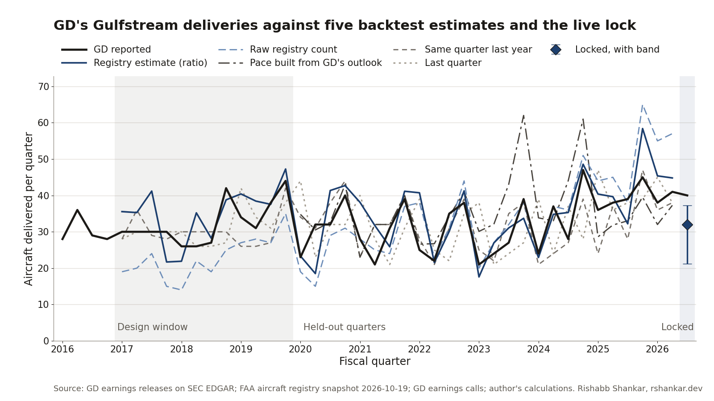
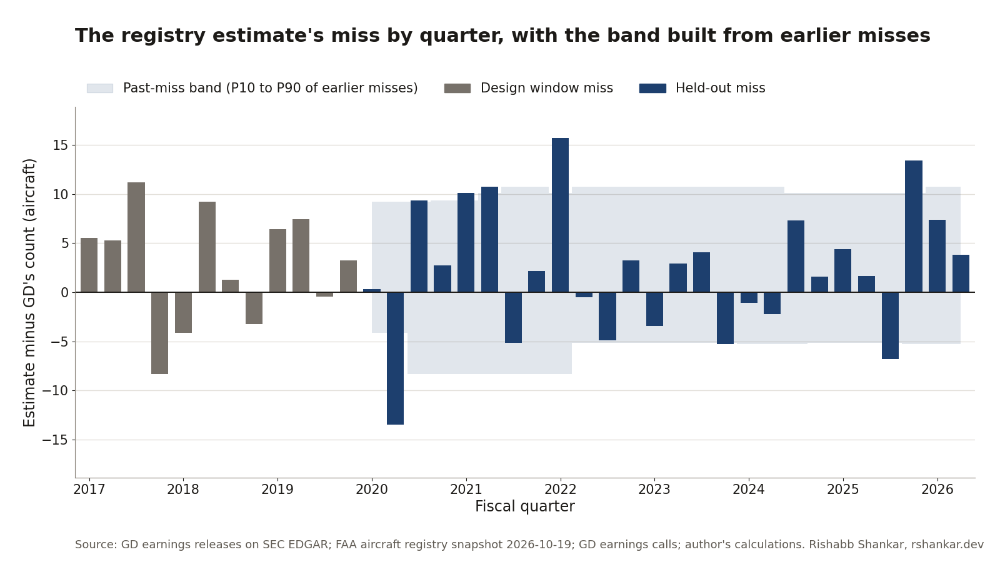

General Dynamics (GD): Gulfstream delivery tracker
Data as of 2026-10-29. Rishabb Shankar, rshankar.dev. Model, data and code: https://github.com/rishabbshankar226/gulfstream-delivery-nowcast
- Over 26 held-out quarters the registry count was off by 5.5 jets a quarter on average, against 6.9 for GD's guidance pace. The difference is not statistically distinguishable. Simply repeating the same quarter last year missed by less on average, 4.6. The backtest reads a registry copy from 2026-10-19, which had months or years to fill in. It shows how well the registry tracks Gulfstream deliveries after the fact. Only the locked quarters test whether it counts them in time.
- My registry estimate for 2026Q3 is 32.0 Gulfstream deliveries, with a past-miss band of 21.2 to 37.2, against 39 delivered in 2025Q3. I locked it as a timestamped GitHub release at 01:51 ET on 2026-10-29. GD reported 40, against a guidance pace of 33.8.
- At trailing Aerospace revenue per delivery of $85M, that estimate implies $2.7B of Aerospace revenue for 2026Q3, against $3.2B a year earlier; scaling last year's quarter by trailing growth gives $3.6B instead. The $85M includes services and Jet Aviation, which do not fall with deliveries, so the delivery-based figure overstates the swing. This is the delivery estimate × trailing Aerospace revenue per delivery, services included: a mechanical estimate.
Student research project. Not investment advice. No rating or price target.
The author holds no position in General Dynamics.
Business overview
Exhibit 1. Segment revenue and operating margin, four quarters to 2026Q2
| Segment | Revenue | Share of revenue | Operating margin |
|---|
| Aerospace | $13.8B | 25.2% | 13.8% |
| Marine Systems | $17.9B | 32.7% | 7.2% |
| Combat Systems | $9.4B | 17.1% | 14.4% |
| Technologies | $13.8B | 25.1% | 9.4% |
Source: GD earnings releases, 2025Q3 to 2026Q2. Segment figures exclude Corporate.
GD reports four segments. Over the four quarters to 2026Q2, Aerospace, the segment that holds Gulfstream, earned $13.8B of revenue, 25.2% of the four segments' total, at a 13.8% operating margin. GD's Aerospace segment, made up of Gulfstream and Jet Aviation, produces business jets and provides aircraft repair, customer support and custom completion services. GD's Combat Systems segment makes and integrates land combat solutions worldwide, including wheeled and tracked combat vehicles, weapon systems, energetics and munitions. GD's Marine Systems segment designs and builds nuclear-powered submarines, surface combatants and auxiliary ships for the U.S. Navy. GD's Technologies segment, made up of GDIT and Mission Systems, provides services, technologies and products to military, intelligence, federal civilian and state customers.
Gulfstream's product cycle
- The G500 entered service in 2018 and the G600 in 2019.
- Gulfstream began G700 deliveries in the second quarter of 2024, after FAA and EASA certification.
- The FAA and EASA type certified the G800 on 2025-04-16.
- G800 deliveries began in the third quarter of 2025.
- G650 production ended in the first quarter of 2025, and the G800 replaces it.
- Gulfstream builds all its large-cabin models in Savannah, Georgia, while a non-U.S. partner assembles the mid-cabin G280.
- Gulfstream's G280 certification release called the G280 a joint effort between Gulfstream and Israel Aerospace Industries (IAI).
- On its 2026-07-29 call, GD said it had stepped up its work on the G400 and would say more over the following couple of quarters about where the G400 will be.
The tracker
I read every Gulfstream jet in the FAA's aircraft registry, including the G280, which the registry files under its builder, IAI. For each airframe I take the first sign that it reached a customer: a customer's registration certificate or the cancellation of Gulfstream's own registration for export, whichever comes first, within a year of the jet's first airworthiness date. I count those events in each of GD's fiscal quarters, by cabin, and scale the count by how many deliveries GD reported per registry event over the four quarters before. That scaled count is the estimate. A design window from 2017Q1 to 2019Q4 chose the event definition (E1) before I scored the 26 quarters from 2020Q1 to 2026Q2. GD's guidance pace, the main comparison, is GD's latest full-year delivery outlook less the deliveries already reported that year, spread over the remaining quarters by their usual share of the year; where no call gave a number, it falls back to the same quarter last year.
The backtest reads a registry copy from 2026-10-19, which had months or years to fill in. It shows how well the registry tracks Gulfstream deliveries after the fact. Only the locked quarters test whether it counts them in time.
Over 26 held-out quarters the registry count was off by 5.5 jets a quarter on average, against 6.9 for GD's guidance pace. The difference is not statistically distinguishable. Simply repeating the same quarter last year missed by less on average, 4.6.
Exhibit 2. Average miss on the 26 held-out quarters, aircraft
| Model | Average miss | Average miss, % | Bias | Large cabin | Mid cabin | Excluding 2020 |
|---|
| Registry estimate (ratio) | 5.5 | 17.9% | 2.2 | 5.0 | 2.2 | 5.4 |
| Raw registry count | 6.2 | 18.5% | 2.4 | 5.8 | 1.8 | 5.8 |
| GD guidance pace | 6.9 | 23.2% | 3.4 | 5.5 | 2.0 | 7.4 |
| Same quarter last year | 4.6 | 15.2% | -0.6 | 4.2 | 1.5 | 4.5 |
| Last quarter | 8.8 | 29.5% | 0.1 | 7.9 | 1.9 | 8.7 |
Bias is the average of estimate minus GD's count. Source: results/metrics.json.
Exhibit 3. Sign tests of the registry estimate against each baseline, Holm-corrected
| Baseline | Quarters better | Quarters worse | Ties | One-sided p | Holm | Relative miss | Lag-1 autocorrelation |
|---|
| GD's guidance pace | 14 | 12 | 0 | 0.423 | not rejected | 0.80 | 0.35 |
| The same quarter last year | 11 | 15 | 0 | 0.837 | not rejected | 1.20 | -0.19 |
| Last quarter | 16 | 10 | 0 | 0.163 | not rejected | 0.63 | 0.10 |
Relative miss is the registry estimate's average miss over the baseline's. A positive autocorrelation of the quarterly differences weakens the sign test.
GD stated a numeric delivery outlook covering 22 of the 26 held-out quarters; the other 4, all in 2021, fall back to the same quarter last year. On those 22 quarters GD's guidance pace missed by 7.4 aircraft on average, against 5.3 for the registry estimate and 4.6 for the same quarter last year. The registry estimate's past-miss band held GD's count in 18 of 26 held-out quarters (69.2%, against a nominal 80%; 95% interval 48.2% to 85.7%).
Exhibit 4. GD's reported deliveries against the five estimates

Where it missed
The five largest misses were 2022Q1 (40.7 against 25), 2020Q2 (18.5 against 32), 2025Q4 (58.4 against 45), 2021Q2 (31.7 against 21), 2021Q1 (38.1 against 28). No filing or call states why the registry count differed from GD's count in those quarters. The truncation test below cuts each quarter's own registry events a set number of days before the quarter ends, a crude stand-in for a registry that has not finished posting. Archived registry copies taken a few weeks after four past quarter ends missed by less than the finished copy did. They held more events for the same past quarters than today's file, which loses a first owner's date when a jet is resold or re-registered, so a later file is not simply a more complete one. Four quarters prove nothing either way.
Exhibit 5. Average miss by year, aircraft
| Year | Ratio | Raw | Guidance | Seasonal | Last |
|---|
| 2020 | 6.47 | 8.25 | 4.23 | 5.50 | 9.50 |
| 2021 | 7.03 | 3.25 | 4.50 | 4.50 | 9.25 |
| 2022 | 6.09 | 6.00 | 2.52 | 2.25 | 8.25 |
| 2023 | 3.93 | 2.50 | 14.06 | 3.75 | 8.75 |
| 2024 | 3.04 | 3.00 | 10.97 | 6.25 | 14.00 |
| 2025 | 6.56 | 9.00 | 6.25 | 6.50 | 5.00 |
| 2026, first half | 5.60 | 16.50 | 4.86 | 2.50 | 5.00 |
No 2021 call stated a full-year number, so guidance in 2021 is the same quarter last year.
Exhibit 6. Registry estimate's average miss with each quarter's events cut early
| Days cut | Average miss |
|---|
| 0 | 5.5 |
| 30 | 13.5 |
| 60 | 22.9 |
| 90 | 31.7 |
Coverage drift: the preregistered flag looks for quarters from 2025Q3 to 2026Q2 above the mean plus two standard deviations of GD deliveries per registry event; none is. The drift runs the other way: the last three quarters sit at 0.69, 0.69, 0.72 against a mean of 1.18, so the registry is counting more events per delivery than usual, which the ratio's trailing scale absorbs only with a lag.
Exhibit 7. The registry estimate's miss by quarter and the band built from earlier misses

The live quarter: 2026Q3
By the 2026-10-29 registry snapshot, 35 large-cabin and 7 mid-cabin airframes had a delivery event in 2026Q3's window (2026-07-05 to 2026-10-04). Over the four quarters before, GD reported 140 large-cabin and 23 mid-cabin deliveries against 187 and 28 registry events. Scaled the same way, the estimate is 32.0 (26.2 large, 5.8 mid), with a past-miss band of 21.2 to 37.2. I locked this estimate as a timestamped GitHub release at 01:51 ET on 2026-10-29. GD then reported 40. GD's guidance pace for the quarter had been 33.8. The band comes from errors measured on a registry file that had years to fill in, so at a live lock it is likely too narrow.
Backlog, book-to-bill and the 2026Q3 estimates
Aerospace ended 2026Q2 with $24.0B of backlog, 1.73 years of its trailing revenue. For the quarter, GD's book-to-bill ratio, orders divided by revenue, was 1.5-to-1 for Aerospace, 1.4-to-1 for the defense segments and 1.4-to-1 company-wide.
Exhibit 8. 2026Q3 revenue estimates by segment
| Segment | 2025Q3 actual | 2026Q3 estimate | Change | Change, % |
|---|
| Aerospace, from the delivery estimate | $3.2B | $2.7B | -$524M | -16.2% |
| Aerospace, drift baseline | $3.2B | $3.6B | $397M | 12.3% |
| Marine Systems | $4.1B | $4.8B | $679M | 16.6% |
| Combat Systems | $2.3B | $2.3B | $73M | 3.2% |
| Technologies | $3.3B | $3.4B | $57M | 1.7% |
| Total, with Aerospace from the delivery estimate | $12.9B | $13.2B | $286M | 2.2% |
Aerospace from the delivery estimate is the delivery estimate × trailing Aerospace revenue per delivery, services included: a mechanical estimate. Aerospace revenue carries services and Jet Aviation, and the G700's mix moves revenue per jet. The drift baseline and the defense segments use the same quarter last year scaled by trailing growth. Segment operating earnings at trailing margins: $1.4B, Corporate excluded.
Exhibit 9. Aerospace revenue for each delivery count
| Change | Deliveries | Aerospace revenue |
|---|
| -4 | 28.0 | $2.4B |
| -3 | 29.0 | $2.5B |
| -2 | 30.0 | $2.5B |
| -1 | 31.0 | $2.6B |
| +0 | 32.0 | $2.7B |
| +1 | 33.0 | $2.8B |
| +2 | 34.0 | $2.9B |
| +3 | 35.0 | $3.0B |
| +4 | 36.0 | $3.0B |
GD's own outlook for 2026
GD still expects Gulfstream to deliver about 160 airplanes in 2026. GD expects Aerospace revenue of around $13.8 billion for 2026. GD anticipates a 14.7% Aerospace operating margin for the year.
The defense segments
Exhibit 10. Defense backlog in years of trailing revenue, and the 2026Q3 baseline
| Segment | Backlog, 2026Q2 | Coverage, years | 2026Q3 estimate | Operating margin |
|---|
| Marine Systems | $65.2B | 3.64 | $4.8B | 7.2% |
| Combat Systems | $29.4B | 3.14 | $2.3B | 14.4% |
| Technologies | $18.0B | 1.31 | $3.4B | 9.4% |
For the defense segments I use my defense backlog study's best next-quarter baseline. That study tested five other defense primes; GD was left out because it stopped tagging backlog in XBRL in 2018. Pooled across those five, the next-quarter error was 9.9% for a backlog model, 7.3% for the seasonal naive and 6.5% for the seasonal naive with drift; four quarters out it was 9.4% for backlog, 5.8% for trailing revenue and 6.0% for trailing revenue with drift. So the 2026Q3 defense figures above are the seasonal naive with drift, and backlog appears as coverage beside them. Applying that study to GD is an assumption: it did not test GD. The study is at https://rishabbshankar226.github.io/Defense-Backlog-forecast/.
What the street watches on the print
- Deliveries against the outlook: GD delivered 79 jets in the first half of 2026, against an outlook of about 160 for the year.
- The Aerospace margin: 14.5% in 2026Q2 and 14.7% for the first half, against the 14.7% GD guided for 2026. GD expects Aerospace margin to be strongest in the fourth quarter, citing progress down the learning curve on all of its airplanes and favorable mix. GD said Aerospace's second-quarter operating margin fell from the first quarter, though margins in every line of business improved, on a slightly disadvantageous mix and modestly higher G&A and R&D.
- Book-to-bill: 1.5 for Aerospace and 1.4 for the defense segments in 2026Q2.
- Marine Systems margins, 2025Q3 to 2026Q2: 7.1%, 7.2%, 7.3%, 7.3%. GD said Marine Systems margin improvement is a function of throughput, deckplate improvements and an improving supply chain, and it expects that to continue at a slow, steady drumbeat. GD expects 2026 Marine Systems revenue of about $18 billion with an operating margin of about 7.4%.
- The G280: GD sees some potential upside to its outlook of about 160 Gulfstream deliveries from large-cabin aircraft, and some risk on G280 deliveries. GD reported delays at its Israel-based supplier of mid-cabin airframes, caused by conflicts in the Middle East.
Risks
Risks to the business, as GD states them; the limits of my method follow separately.
- GD says that if Aerospace customers default on existing contracts and the contracts are not replaced, the segment's anticipated revenue and profitability could be reduced materially.
- GD says customer demand for its business aircraft can be affected by changes in general economic conditions, the availability and cost of credit, pricing pressures and trends in capital goods markets.
- GD says it typically assumes more risk with fixed-price contracts, which offer additional profits when it completes the work for less than originally estimated.
- GD says non-U.S. transactions can involve increased risks from foreign exchange rate variability, which could hurt sales and the translation of international revenue into U.S. dollars, and from differing legal systems.
- GD says many of its new products must meet extensive, time-consuming regulatory requirements that are often outside its control and may cause unanticipated delays.
- GD says it sometimes relies on only one or two sources of supply, and any supply chain disruption could hurt its ability to meet customer commitments.
- In its 2025 annual report, GD said tariffs had not had a material impact on its results but reduced Aerospace operating margins by 30 basis points in 2025.
- GD says decreases in U.S. government defense and other spending, or changes in spending allocation or priorities, could reduce, delay or terminate its programs and impact its financial performance.
Limitations of the method
- Exports: a jet exported to a foreign registry without a US registration leaves no US record, so the registry never sees that delivery. Since 2022 the registry's yearly mid-cabin count has stayed within a few jets of GD's, so G280 exports do not look like a large gap now.
- Processing: registry processing can lag by months. The backtest reads events by their stamped date in a file that had years to fill in, while a live estimate sees only what has posted.
- Military: military and special-mission airframes may never reach the civil registry.
- Handover: GD counts a delivery at its own handover, which a registration or cancellation date only approximates, so an event can land in the next or previous quarter.
- Coverage: the ratio assumes the registry's coverage of GD's count holds steady from year to year. It drifted: the registry keeps only an airframe's current certificate, so a resold or renewed jet loses its first owner's date.
- Used jets: a used jet that re-entered the US registry with a fresh airworthiness date, one with no airworthiness date or year of manufacture, or one whose maker code changed, can read as a new delivery.
- Band: the past-miss band comes from errors measured on a finished registry file, so it is likely too narrow at a live lock.
- Audit: in 10 of 30 airframes checked against outside sources (33.3%), the source disagreed with the registry reading or could not confirm it: five were used jets read as new deliveries, two had an earlier stated delivery, and three could not be confirmed. All but one source was a registry mirror or aircraft-history site, and every event the audit could date fell between 2000 and 2019, so it says little about recent quarters.
Model page
Exhibit 11. The workbook's Summary and Segments sheets
| Summary | Design (12 quarters) | Held out (26 quarters) |
|---|
| Average miss, ratio | 5.5 | 5.5 |
| Average miss, raw | 9.4 | 6.2 |
| Average miss, same quarter last year | 5.0 | 4.6 |
| Average miss, last quarter | 3.8 | 8.8 |
| Segment | Revenue, 4Q to 2026Q2 | Revenue, 4Q to 2025Q2 | Drift, 2026Q3 | Margin, 4Q | Backlog | Coverage, years |
|---|
| Aerospace | $13.8B | $12.3B | $3.6B | 13.8% | $24.0B | 1.73 |
| Marine Systems | $17.9B | $15.4B | $4.8B | 7.2% | $65.2B | 3.64 |
| Combat Systems | $9.4B | $9.1B | $2.3B | 14.4% | $29.4B | 3.14 |
| Technologies | $13.8B | $13.5B | $3.4B | 9.4% | $18.0B | 1.31 |
| Derived | Value |
|---|
| Deliveries, four quarters to 2026Q2 | 163 |
| Aerospace revenue per delivery | $85M |
| 2026Q3 delivery estimate | 32.0 |
| Aerospace revenue from the estimate | $2.7B |
| Aerospace operating earnings from the estimate | $0.4B |
| Revenue, all four segments | $13.2B |
| Segment operating earnings, all four segments | $1.4B |
From output/gd_gulfstream_model.xlsx, where every figure above is a live formula over typed inputs.
Sources
Numbered sources are the ones the superscripts cite.
- GD earnings call transcript, https://www.fool.com/earnings/call-transcripts/2026/08/07/general-dynamics-gd-q2-2026-earnings-call-transcript/ , retrieved 2026-10-19.
- GD Form 10-K for 2025, https://sec.gov/Archives/edgar/data/40533/000004053326000006 , retrieved 2026-10-19.
- GD Form 10-K for 2024, https://sec.gov/Archives/edgar/data/40533/000004053325000008 , retrieved 2026-10-19.
- GD Form 10-Q for 2025Q1, https://sec.gov/Archives/edgar/data/40533/000004053325000014 , retrieved 2026-10-19.
- Gulfstream press release, https://web.archive.org/web/20170516140736id_/http://gulfstreamnews.com:80/news/gulfstream-g280-certified-by-federal-aviation-administration-and-civil-aviation-authority-of-israel , retrieved 2026-10-19.
- GD Form 8-K, Exhibit 99.1, 2026Q2 results, https://sec.gov/Archives/edgar/data/40533/000004053326000029 , retrieved 2026-10-19.
- GD Form 10-Q for 2026Q2, https://sec.gov/Archives/edgar/data/40533/000004053326000032 , retrieved 2026-10-19.
- GD earnings releases, Exhibit 99.1 to each results 8-K, in these SEC EDGAR folders:
https://sec.gov/Archives/edgar/data/40533/000004053317000012 https://sec.gov/Archives/edgar/data/40533/000004053317000031 https://sec.gov/Archives/edgar/data/40533/000004053317000040 https://sec.gov/Archives/edgar/data/40533/000004053318000003 https://sec.gov/Archives/edgar/data/40533/000004053318000016 https://sec.gov/Archives/edgar/data/40533/000004053318000040 https://sec.gov/Archives/edgar/data/40533/000004053318000058 https://sec.gov/Archives/edgar/data/40533/000004053319000004 https://sec.gov/Archives/edgar/data/40533/000004053319000018 https://sec.gov/Archives/edgar/data/40533/000004053319000046 https://sec.gov/Archives/edgar/data/40533/000004053319000054 https://sec.gov/Archives/edgar/data/40533/000004053320000007 https://sec.gov/Archives/edgar/data/40533/000004053320000026 https://sec.gov/Archives/edgar/data/40533/000004053320000055 https://sec.gov/Archives/edgar/data/40533/000004053320000061 https://sec.gov/Archives/edgar/data/40533/000004053321000004 https://sec.gov/Archives/edgar/data/40533/000004053321000014 https://sec.gov/Archives/edgar/data/40533/000004053321000041 https://sec.gov/Archives/edgar/data/40533/000004053321000047 https://sec.gov/Archives/edgar/data/40533/000004053322000004 https://sec.gov/Archives/edgar/data/40533/000004053322000011 https://sec.gov/Archives/edgar/data/40533/000004053322000037 https://sec.gov/Archives/edgar/data/40533/000004053322000046 https://sec.gov/Archives/edgar/data/40533/000004053323000003 https://sec.gov/Archives/edgar/data/40533/000004053323000025 https://sec.gov/Archives/edgar/data/40533/000004053323000058 https://sec.gov/Archives/edgar/data/40533/000004053323000068 https://sec.gov/Archives/edgar/data/40533/000004053324000004 https://sec.gov/Archives/edgar/data/40533/000004053324000013 https://sec.gov/Archives/edgar/data/40533/000004053324000033 https://sec.gov/Archives/edgar/data/40533/000004053324000041 https://sec.gov/Archives/edgar/data/40533/000004053325000003 https://sec.gov/Archives/edgar/data/40533/000004053325000012 https://sec.gov/Archives/edgar/data/40533/000004053325000033 https://sec.gov/Archives/edgar/data/40533/000004053325000043 https://sec.gov/Archives/edgar/data/40533/000004053326000003 https://sec.gov/Archives/edgar/data/40533/000004053326000010 https://sec.gov/Archives/edgar/data/40533/000004053326000029
- FAA Releasable Aircraft database, ReleasableAircraft.zip (ACFTREF, MASTER and DEREG), snapshot 2026-10-19 for the backtest, and daily snapshots since, the newest dated 2026-11-01.
- GD earnings calls from 2020-01-29 to 2026-07-29, for the guidance outlooks in data/guidance.csv.
- Repository: https://github.com/rishabbshankar226/gulfstream-delivery-nowcast